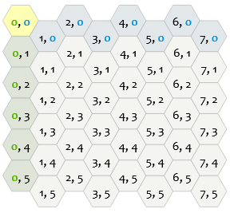

Busharium is a cosy environment builder game that utilises a hex grid. It has a stylised art direction,
invoking Australian watercolour and Ken Sugimori's original Pokemon concepts. It also heavily draws
inspiration from Australian flora and fauna.
This project was worked on by a team over 5 months, and I was the sole programmer. My responsibilities
involved all of the gameplay code, engine code, and all of the tooling that the team would need to make this game.
Click here to download the game.
Click here to view the source code.
Click here to read about making the engine.
As the only programmer on this project (and the one writing the engine) a lot of my own choices would have implicit effects on others in the project, and that was not a responsibility I took lightly. I ended up taking on a backend role in a big way, spending a good 60-70% of my time working on tooling to support the other team members. This would involve a comprehensive art importer for debugging and setting up assets, data oriented systems allowing designers to set up as much as possible without me needing to alter code, and a way to interface with everything that wouldn't become a burden for those using the tooling.
Busharium took place on a hexagonal grid. Tiles in a hexagonal grid line up quite differently to square grids, which means different considerations need to be made for both how they are stored in memory and how they are navigated. This game needed a way to query adjacent tiles whenever a new tile was placed, and unlike a square grid where there are 4 adjacencies, for hex grid's there are 6 adjacencies, which can't line up with how it's stored in memory as cleanly.
Given the highest priority was on having easy to perform adjacency checks, and we hadn't worked out how big we wanted the grid to max out at, I used a doubly-linked graph structure for our prototype. Each tile would have a pointer to it's neighbours, and they in turn would have a pointer back to it. Then I had a lookup table with each tile, where the key was a hash of the tile coordinates.
This setup was a little unwieldy but it was something I was able to throw together pretty quickly with my understanding of other graph structures like linked lists and heirarchy's. The positions that would be used for their hash was something called "Doubled Coordinates". Since the hexes were flat topped, the way this works is by treating a distance of 0.5 on the Y as 1, and 1 as 2. This would mean that a tile down and to the right of 0,0 would be 1,1 and a tile directly down would be 0,2. This allowed storing the coordinates as a pair of shorts, and the ability to hash them by simply bitshifting them into an integer.
There were a few problems with the dynamic graph structure that I hoped to solve with a static grid and offset coordinates. The first of these issues was that every time a tile was placed it required adding an element to a dynamic structure, which meant potential for hitches whenever that structure needed to be resized. It also meant bad cache performance when comparing tiles near each other, as they could be stored in wildly different places in memory. And the final issue that had been causing some bugs in conversion operations, is that in doubled coordinates not every set of coordinates is valid, and with floating point innacuracy at further sections of the grid we occasionally would try to lookup an invalid coordinate and have to handle that edge case somehow. TODO: discuss prototype problems with invalid coordinates, dynamic sizing, bad cache optimisation with linked structure.

So to fix the performance issues, I decided to store the entire grid at its largest possible size in a static array of arrays
in memory. I also made it so each tile in this grid was as small as possible, and not a pointer to some heap object, to improve
cache performance. The most relevent tile data, and a pointer to the render objects would be what was contained in the grid.
The way I layed this out in memory, was using something called "Offset Coordinates", where it would be just like a square grid,
except each even column was offset. This had the benefit of working with a static structure, as well as not having any invalid
coordinates to deal with. The only flaw with storing the tiles this way is that its hard to navigate a structure like this and
determing adjacent tiles.
In order to navigate the structure I set up some conversion functions to something called "Axial Coordinates", which is identical to the useful "Cube Coordinates" except without the need to store the third component. In this coordinate space, q + r + s = 0, so with only two coordinates stored you can always find the third. Each adjacent tile in this system is accessed by adding 1 to a component, and subtracting 1 from another. The rules for this are a little complex to explain, so I've provided this image to show the pattern.
Credit for these diagrams goes to Red Blob Games.
Click here for more information on hexagonal coordinate systems,
as well as interactive versions of the diagrams.
So much of the game's logic revolved around the connectivity of different assets. What tiles are used for which habitat, which sprites represent which collected habitat (objective), and which audio file plays when. The code at no point has any knowledge of any of these assets, and so it has a json file that points it to the assets, but also defines many of the game's important variables. Designers were able to completely modify milestone thresholds, how many habitats existed, where UI elements would be placed on the screen and more. Many of the selections within this editor window are aware of data from other sections, for example: the dropdowns for which tiles make up a habitat reflect which tiles have been defined by the designer.

The engine's art importer was revamped for this game, to support the needs of the artists. The goal of the art importer is to preview how an asset looks before commiting to it. Artists could see the assets in the lighting of the game, manipulate the camera settings, and apply materials, all before importing it. Then once the artist was ready they could click the 'cook' button, and all the mesh files would be converted to an internal format and connected via a prefab, with the applied materials saved. The revamping of the art importer was guided by the needs of the artists on this project.

The game's need for UI was simple for the most part, just requiring elements in the corner to allow the player to see controls, see which tile they have selected, and see a notification when they've unlocked new variants. There were two more complex parts though, being the radial menus for selecting a tile, and the stickersheet which would be animated at certain gameplay milestones.

The other consideration we had was accounting for different resolutions. Accounting for different sizes but same aspect ratio was achieved by rendering the UI Sprites in Clip Space as opposed to Screen Space. I ended up having 2 values to dictate the position of the sprites, an anchor and an offset. The offset, unlike the anchor, would have its X component be multiplied by the aspect of the screen. This way designers could set up sprites to be positioned exactly how they'd like them when it came to different aspect ratios.
The interactivity of the radial menus was super simple, basically just doing dot product comparisons to see which slice was being hovered. In terms of rendering it though, basically we just had 3 images for each radial menu, one showing each tile as locked, one showing each as unlocked, and one showing each as hovered. Then in a shader I just display each pixel as one of the three images based on whether its slice is locked/unlocked/hovered.
I was able to use the basic coroutine functionality I had made for my engine to get this event to play out over time, and apart from that its really simple. All I had to do was modify the anchor over time with an easing function. I set up values the designers could tweak like delays, durations, and the amount the sticker would move to be placed.

The goal the artists had was for any frame of the game to look like a watercolour painting, drawing inspiration from Australian watercolour, and Ken Sugimori's original Pokemon concepts. So, with this in mind, I worked with them to ensure the rendering in the engine would support that. I tore out the PBR lighting equations and gave our tech artist, Phoenix Marsh, free reign (with support) to set up the lighting as they liked. They previously had experience setting up a 'toon shader' and so we collaborated to translate it into something that would look right for our game.
Things didn't look quite right when having harsh cutoffs between highlights and shadows. This is a result of using a toon shader as the idea is to eliminate gradients. However, we wanted to emulate the less uniform, more expressive nature of paintings, where no brushstroke is exact, and drops of paint and texture result in uneven or splotchy lines. To do this I used a noise map seeded with the XZ position of each fragment in world space to offset the highlight values, and offset the shadowmaps. A side benefit of doing this is that it was able to mask the resolution of the shadowmap, making it look higher detail than we otherwise could.

We needed a way to present the boundary of play to the player, and we wanted it to be something dynamic and in-world
as it would expand as the player progressed. For this I developed what I believe to be a new technique for generating
a fog map that aligns to a hex grid.
Click here for my writeup on developing this technique.
Over the project I frequently set up different feature branches that would be commited to regularly. As I was the only programmer I didn't have as much time to set up tests for everything, but I did have a designer on the team, Alicia Hayashi, who was able to run daily smoke tests for me before integrating to main. Due to the short playtime of our game (3-5mins), we decided it was reasonable to set it up that way.
I had a build script set up that built out both the editor version and standalone version of the game.
And on top of this, assets would be cooked down on import so we didn't need to include it in the build pipeline.
This resulted in always having a working version of the game to play, and very quick turn around for making
changes and seeing them reflected in game.
For deployments I had Butler set up, which is a command line tool for itch.io that allows you to easily upload
new versions while only modifying changed files to reduce upload time.
I was the sole programmer on this project, and I also programmed the engine used for it. I spent my time balancing working on tooling for the other team members and working on gameplay code. I feel I was able to be a useful member of the team by communicating thoroughly, holding myself to a high standard, and dedicating myself to the project. I feel really happy with how the project turned out and I'm so proud of the amazing work each of the members of my team put in.

Design Lead & QA
Alicia worked tirelessly on the project. It was easy to see how dedicated she was to
what she was doing, and she proved time and again how she could soar when the
opportunity presented. She handled the challenges of being Design Lead in stride and
was a big force in the game being as polished as it ended up. She was never afraid to
get her hands dirty in engine and set things up, smash out a bunch of UI, or prototype
with pen and paper.
Producer, Designer, & Sound Support
Blake was a fantastic producer. His management of the project and us as a time, while
fairly loose, was very appreciated. He always made sure everyone’s voices were being
heard, and took everyone’s needs seriously. On top of that he showed off a range of
design skills and worked really well with Alicia to ensure that the game was being
received the way we intended and wasn’t bogged down by hitches.
Sound & Composition
I didn't get to work as closely with Isabella since she worked remotely, but she put
a ton of effort into the work she made. She came to us and worked with us through
multiple revisions of sounds and the music, always looking to improve and share
her talent. The final result of her assets came out really well and fit the game
wonderfully, which was especially impressive given she joined the project halfway.
Environment & Tech Artist
Phoenix killed it on pushing the game’s art style. Between their hard work on pre-
visualisation, fine tuning shaders, and attention to detail with the tile assets, they really
brought a sense of life to the game. They worked really well with Pierce to create a
cohesive style, and assets to suit. Phoenix was prepared to learn new tools, request
things they needed, and collaborate with any of the rest of us to improve the game.
Environment & Character Artist
Pierce did such an amazing job adding wonder to the game’s art. His habitat assets,
and spirit assets are such a nice reward for the player to discover, and really evoke the
sense of accomplishment and joy we’d hoped to encourage in players. He was
incredibly communicative and was never afraid to speak up if he didn’t understand
something. Pierce was an incredibly dedicated member of the team and project.